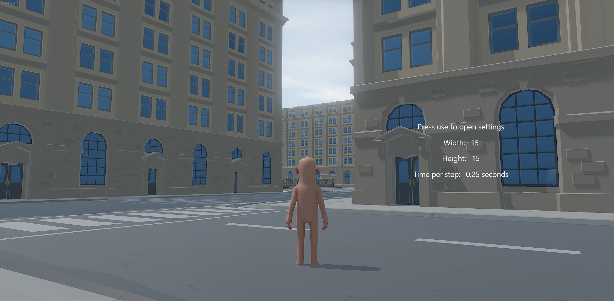
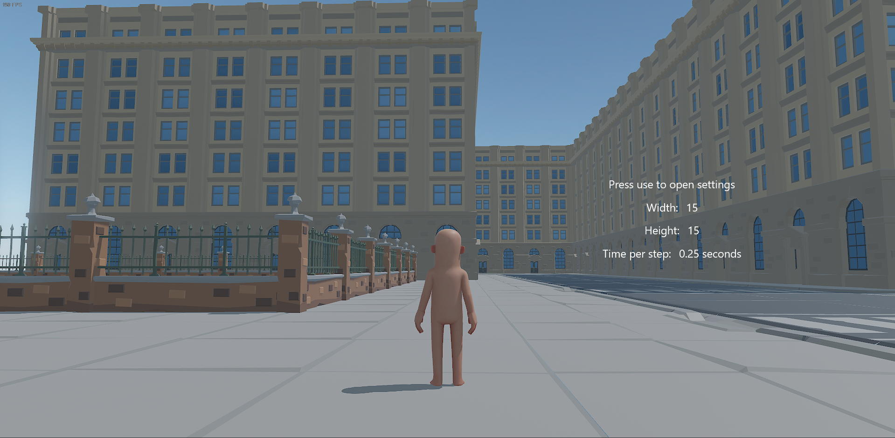

Wave Function Collapse City


Participei no Tech Jam do S&box, criando um sistema de geração de cidades procedimentais utilizando o algoritmo Wave Function Collapse. O projeto constrói automaticamente cidades com estradas e edifícios de forma coerente, permitindo uma criação dinâmica e única de ambientes urbanos dentro do jogo.